Table of Contents
import pandas as pd
import numpy as np
import math
import matplotlib.pyplot as plt
import seaborn as sns
%matplotlib inline
from sklearn.preprocessing import OneHotEncoder, StandardScaler
from sklearn.impute import MissingIndicator, SimpleImputer
from sklearn.dummy import DummyClassifier
from sklearn.linear_model import LogisticRegression
from sklearn.model_selection import train_test_split, cross_val_score
from sklearn.feature_selection import SelectFromModel
# plot_confusion_matrix is a handy visual tool, added in the latest version of scikit-learn
# if you are running an older version, comment out this line and just use confusion_matrix
from sklearn.metrics import plot_confusion_matrix
from sklearn.metrics import confusion_matrix
from sklearn.metrics import plot_roc_curve
Objectives#
The goal here is to illustrate a possible workflow for classification modeling with
sklearn’sLogisticRegressionmodel.
Formulate and implement an iterative modeling workflow
Modeling Walkthrough#
Modeling Steps#
Build a model based on the Titanic dataset that predicts whether a given person survived or not
Evaluate the performance of the model
Make changes in an attempt to improve the model
Demonstrate whether an improvement was made
The Data#
This dataset has the following columns:
Variable |
Definition |
Key |
|---|---|---|
survival |
Survival |
0 = No, 1 = Yes |
pclass |
Ticket class |
1 = 1st, 2 = 2nd, 3 = 3rd |
sex |
Sex |
|
Age |
Age in years |
|
sibsp |
# of siblings / spouses aboard the Titanic |
|
parch |
# of parents / children aboard the Titanic |
|
ticket |
Ticket number |
|
fare |
Passenger fare |
|
cabin |
Cabin number |
|
embarked |
Port of Embarkation |
C = Cherbourg, Q = Queenstown, S = Southampton |
Initial Data Understanding and Preparation#
Open up the file, get everything into X features and y target variables, divided into train and test.
df = pd.read_csv("titanic.csv")
df.head()
| PassengerId | Survived | Pclass | Name | Sex | Age | SibSp | Parch | Ticket | Fare | Cabin | Embarked | |
|---|---|---|---|---|---|---|---|---|---|---|---|---|
| 0 | 1 | 0 | 3 | Braund, Mr. Owen Harris | male | 22.0 | 1 | 0 | A/5 21171 | 7.2500 | NaN | S |
| 1 | 2 | 1 | 1 | Cumings, Mrs. John Bradley (Florence Briggs Th... | female | 38.0 | 1 | 0 | PC 17599 | 71.2833 | C85 | C |
| 2 | 3 | 1 | 3 | Heikkinen, Miss. Laina | female | 26.0 | 0 | 0 | STON/O2. 3101282 | 7.9250 | NaN | S |
| 3 | 4 | 1 | 1 | Futrelle, Mrs. Jacques Heath (Lily May Peel) | female | 35.0 | 1 | 0 | 113803 | 53.1000 | C123 | S |
| 4 | 5 | 0 | 3 | Allen, Mr. William Henry | male | 35.0 | 0 | 0 | 373450 | 8.0500 | NaN | S |
df.describe()
| PassengerId | Survived | Pclass | Age | SibSp | Parch | Fare | |
|---|---|---|---|---|---|---|---|
| count | 891.000000 | 891.000000 | 891.000000 | 714.000000 | 891.000000 | 891.000000 | 891.000000 |
| mean | 446.000000 | 0.383838 | 2.308642 | 29.699118 | 0.523008 | 0.381594 | 32.204208 |
| std | 257.353842 | 0.486592 | 0.836071 | 14.526497 | 1.102743 | 0.806057 | 49.693429 |
| min | 1.000000 | 0.000000 | 1.000000 | 0.420000 | 0.000000 | 0.000000 | 0.000000 |
| 25% | 223.500000 | 0.000000 | 2.000000 | 20.125000 | 0.000000 | 0.000000 | 7.910400 |
| 50% | 446.000000 | 0.000000 | 3.000000 | 28.000000 | 0.000000 | 0.000000 | 14.454200 |
| 75% | 668.500000 | 1.000000 | 3.000000 | 38.000000 | 1.000000 | 0.000000 | 31.000000 |
| max | 891.000000 | 1.000000 | 3.000000 | 80.000000 | 8.000000 | 6.000000 | 512.329200 |
df.isna().sum()['Age']
177
Age data is missing for about 1 in 5 rows in our dataset. For now, let’s just exclude it, plus the non-numeric columns, and PassengerId, which doesn’t seem like a real feature, but rather just an artifact of the dataset.
df = df.drop("PassengerId", axis=1)
df.dtypes
Survived int64
Pclass int64
Name object
Sex object
Age float64
SibSp int64
Parch int64
Ticket object
Fare float64
Cabin object
Embarked object
dtype: object
# Pclass are numbers but it's not clear that the difference between 1st and 2nd is the
# same as the difference between 2nd and 3rd
numeric_columns = ["Survived", "SibSp", "Parch", "Fare"]
sns.pairplot(df[numeric_columns]);
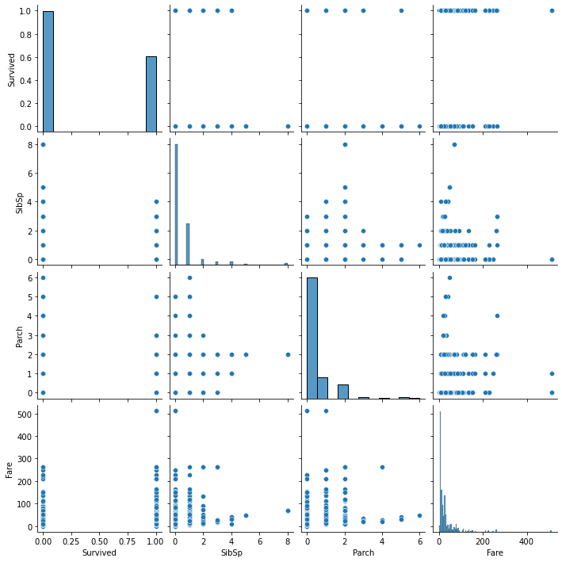
numeric_df = df[numeric_columns]
X = numeric_df.drop("Survived", axis=1)
y = numeric_df["Survived"]
X_train, X_test, y_train, y_test = train_test_split(X, y, random_state=2021)
1st Model - “Dummy” Model#
Let’s start with a completely “dummy” model, that will always choose the majority class.
dummy_model = DummyClassifier(strategy="most_frequent")
Fit the model on our data
dummy_model.fit(X_train, y_train)
DummyClassifier(strategy='most_frequent')
We should expect all predictions to be the same
# just grabbing the first 50 to save space
dummy_model.predict(X_train)[:50]
array([0, 0, 0, 0, 0, 0, 0, 0, 0, 0, 0, 0, 0, 0, 0, 0, 0, 0, 0, 0, 0, 0,
0, 0, 0, 0, 0, 0, 0, 0, 0, 0, 0, 0, 0, 0, 0, 0, 0, 0, 0, 0, 0, 0,
0, 0, 0, 0, 0, 0])
Model Evaluation#
Let’s do some cross-validation to see how the model would do in generalizing to new data it’s never seen.
cv_results = cross_val_score(dummy_model, X_train, y_train, cv=5)
cv_results
array([0.61940299, 0.61940299, 0.61940299, 0.62406015, 0.61654135])
So, the mean accuracy is a little over 62% if we always guess the majority class.
To show the spread, let’s make a convenient class that can help us organize the model and the cross-validation:
class ModelWithCV():
'''Structure to save the model and more easily see its crossvalidation'''
def __init__(self, model, model_name, X, y, cv_now=True):
self.model = model
self.name = model_name
self.X = X
self.y = y
# For CV results
self.cv_results = None
self.cv_mean = None
self.cv_median = None
self.cv_std = None
#
if cv_now:
self.cross_validate()
def cross_validate(self, X=None, y=None, kfolds=5):
'''
Perform cross-validation and return results.
Args:
X:
Optional; Training data to perform CV on. Otherwise use X from object
y:
Optional; Training data to perform CV on. Otherwise use y from object
kfolds:
Optional; Number of folds for CV (default is 5)
'''
cv_X = X if X else self.X
cv_y = y if y else self.y
self.cv_results = cross_val_score(self.model, cv_X, cv_y, cv=kfolds)
self.cv_mean = np.mean(self.cv_results)
self.cv_median = np.median(self.cv_results)
self.cv_std = np.std(self.cv_results)
def print_cv_summary(self):
cv_summary = (
f'''CV Results for `{self.name}` model:
{self.cv_mean:.5f} ± {self.cv_std:.5f} accuracy
''')
print(cv_summary)
def plot_cv(self, ax):
'''
Plot the cross-validation values using the array of results and given
Axis for plotting.
'''
ax.set_title(f'CV Results for `{self.name}` Model')
# Thinner violinplot with higher bw
sns.violinplot(y=self.cv_results, ax=ax, bw=.4)
sns.swarmplot(
y=self.cv_results,
color='orange',
size=10,
alpha= 0.8,
ax=ax
)
return ax
dummy_model_results = ModelWithCV(
model=dummy_model,
model_name='dummy',
X=X_train,
y=y_train
)
fig, ax = plt.subplots()
ax = dummy_model_results.plot_cv(ax)
plt.tight_layout();
dummy_model_results.print_cv_summary()
CV Results for `dummy` model:
0.61976 ± 0.00242 accuracy
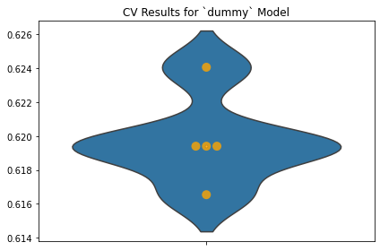
fig, ax = plt.subplots()
fig.suptitle("Dummy Model")
plot_confusion_matrix(dummy_model, X_train, y_train, ax=ax, cmap="plasma");
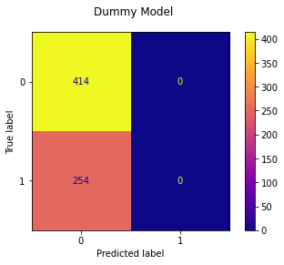
# just the numbers (this should work even with older scikit-learn)
confusion_matrix(y_train, dummy_model.predict(X_train))
array([[414, 0],
[254, 0]])
A pretty lopsided confusion matrix!
plot_roc_curve(dummy_model,X_train,y_train)
<sklearn.metrics._plot.roc_curve.RocCurveDisplay at 0x7ff57d3b8490>
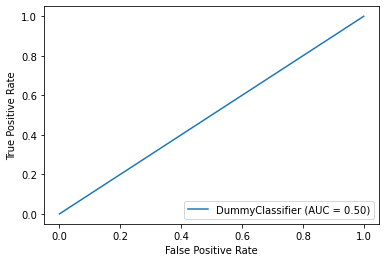
2nd Model - Logistic Regression#
Let’s use a logistic regression and compare its performance.
We’re going to specifically avoid any regularization (the default) to see how the model does with little change. So we’ll pass 'none to the penalty parameter to not use any regularization.
simple_logreg_model = LogisticRegression(random_state=2021, penalty='none')
simple_logreg_model.fit(X_train, y_train)
LogisticRegression(penalty='none', random_state=2021)
Look at the predictions:
simple_logreg_model.predict(X_train)[:50]
array([0, 0, 0, 0, 0, 0, 0, 1, 0, 0, 0, 0, 0, 1, 0, 1, 0, 0, 0, 0, 0, 0,
0, 0, 0, 0, 0, 0, 0, 0, 0, 0, 0, 0, 0, 0, 0, 0, 0, 0, 1, 0, 0, 0,
0, 0, 1, 0, 0, 0])
Mixture of 1s and 0s this time
Model Evaluation, Part 2#
simple_logreg_results = ModelWithCV(
model=simple_logreg_model,
model_name='simple_logreg',
X=X_train,
y=y_train
)
# Saving variable for convenience
model_results = simple_logreg_results
# Plot CV results
fig, ax = plt.subplots()
ax = model_results.plot_cv(ax)
plt.tight_layout();
# Print CV results
model_results.print_cv_summary()
CV Results for `simple_logreg` model:
0.68119 ± 0.02457 accuracy
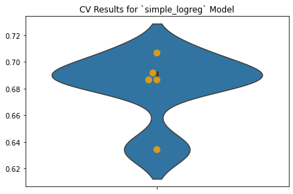
So the mean accuracy is better when the model is actually taking in information from the features instead of always guessing the majority class.
confusion_matrix(y_train, simple_logreg_model.predict(X_train))
array([[386, 28],
[185, 69]])
fig, ax = plt.subplots()
fig.suptitle("Logistic Regression with Numeric Features Only")
plot_confusion_matrix(simple_logreg_model, X_train, y_train, ax=ax, cmap="plasma");
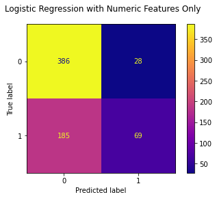
So, in general we are not labeling many of the “not survived” passengers as “survived”, but for “survived” passengers we’re getting it wrong most of the time.
plot_roc_curve(simple_logreg_model,X_train,y_train)
<sklearn.metrics._plot.roc_curve.RocCurveDisplay at 0x7ff575e72d00>
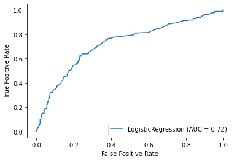
This model is doing better than just choosing the most frequent class every time, but it probably could do better.
We can say this model is likely overfitting, which means we need more complexity. We can add more complexity a few different ways. We’ll try doing some feature engineering/data preparation.
Back to Data Preparation#
Maybe there is some useful information in the features we are not using yet. Let’s go wild and add all of them!
Note: you can and should add features incrementally in a “real” modeling context. The engineering effort of encoding the variables can be non-trivial! But here let’s assume that it’s not too much work to encode all of them.
Start with a new train-test split that contains all of the features
X = df.drop("Survived", axis=1)
y = df["Survived"]
X_train, X_test, y_train, y_test = train_test_split(X, y, random_state=2021)
X_train.columns
Index(['Pclass', 'Name', 'Sex', 'Age', 'SibSp', 'Parch', 'Ticket', 'Fare',
'Cabin', 'Embarked'],
dtype='object')
X_train.isna().sum()
Pclass 0
Name 0
Sex 0
Age 129
SibSp 0
Parch 0
Ticket 0
Fare 0
Cabin 512
Embarked 1
dtype: int64
Handling Missing Values#
Let’s be extra cautious and make a separate column to indicate whether there originally was a missing value.
In our training data there are only missing values for a couple of the columns, but we can’t be sure about where the test set will be missing data.
The MissingIndicator from sklearn will mark the missing values in an input array.
indicator_demo = MissingIndicator()
indicator_demo.fit(X_train)
indicator_demo.features_
array([3, 8, 9])
indicator_demo.transform(X_train)[:5, :]
array([[False, True, False],
[ True, True, False],
[False, True, False],
[False, True, False],
[False, True, False]])
X_train.iloc[:5, [3, 8, 9]]
| Age | Cabin | Embarked | |
|---|---|---|---|
| 784 | 25.0 | NaN | S |
| 568 | NaN | NaN | C |
| 381 | 1.0 | NaN | C |
| 694 | 60.0 | NaN | S |
| 844 | 17.0 | NaN | S |
indicator = MissingIndicator(features="all")
indicator.fit(X_train)
MissingIndicator(features='all')
def add_missing_indicator_columns(X, indicator):
"""
Helper function for transforming features
For every feature in X, create another feature indicating whether that feature
is missing. (This doubles the number of columns in X.)
"""
# create a 2D array of True and False values indicating whether a given feature
# is missing for that row
missing_array_bool = indicator.transform(X)
# transform into 1 and 0 for modeling
missing_array_int = missing_array_bool.astype(int)
# helpful for readability but not needed for modeling
missing_column_names = [col + "_missing" for col in X.columns]
# convert to df so it we can concat with X
missing_df = pd.DataFrame(missing_array_int, columns=missing_column_names, index=X.index)
return pd.concat([X, missing_df], axis=1)
X_train = add_missing_indicator_columns(X=X_train, indicator=indicator)
X_train.head()
| Pclass | Name | Sex | Age | SibSp | Parch | Ticket | Fare | Cabin | Embarked | Pclass_missing | Name_missing | Sex_missing | Age_missing | SibSp_missing | Parch_missing | Ticket_missing | Fare_missing | Cabin_missing | Embarked_missing | |
|---|---|---|---|---|---|---|---|---|---|---|---|---|---|---|---|---|---|---|---|---|
| 784 | 3 | Ali, Mr. William | male | 25.0 | 0 | 0 | SOTON/O.Q. 3101312 | 7.0500 | NaN | S | 0 | 0 | 0 | 0 | 0 | 0 | 0 | 0 | 1 | 0 |
| 568 | 3 | Doharr, Mr. Tannous | male | NaN | 0 | 0 | 2686 | 7.2292 | NaN | C | 0 | 0 | 0 | 1 | 0 | 0 | 0 | 0 | 1 | 0 |
| 381 | 3 | Nakid, Miss. Maria ("Mary") | female | 1.0 | 0 | 2 | 2653 | 15.7417 | NaN | C | 0 | 0 | 0 | 0 | 0 | 0 | 0 | 0 | 1 | 0 |
| 694 | 1 | Weir, Col. John | male | 60.0 | 0 | 0 | 113800 | 26.5500 | NaN | S | 0 | 0 | 0 | 0 | 0 | 0 | 0 | 0 | 1 | 0 |
| 844 | 3 | Culumovic, Mr. Jeso | male | 17.0 | 0 | 0 | 315090 | 8.6625 | NaN | S | 0 | 0 | 0 | 0 | 0 | 0 | 0 | 0 | 1 | 0 |
Now that we’ve specified which values were originally missing, let’s fill in those missing values. This takes two separate imputers because we want to use the mean for numeric data and the majority class for categorical data.
The SimpleImputer class fills in the mean value by default, so we’ll have to override that for the categorical columns.
numeric_feature_names = ["Age", "SibSp", "Parch", "Fare"]
categorical_feature_names = ["Pclass", "Name", "Sex", "Ticket", "Cabin", "Embarked"]
X_train_numeric = X_train[numeric_feature_names]
X_train_categorical = X_train[categorical_feature_names]
numeric_imputer = SimpleImputer()
numeric_imputer.fit(X_train_numeric)
SimpleImputer()
categorical_imputer = SimpleImputer(strategy="most_frequent")
categorical_imputer.fit(X_train_categorical)
SimpleImputer(strategy='most_frequent')
We’ll build a function here to minimize our work of imputation:
def impute_missing_values(X, imputer):
"""
Given a DataFrame and an imputer, use the imputer to fill in all
missing values in the DataFrame
"""
imputed_array = imputer.transform(X)
imputed_df = pd.DataFrame(imputed_array, columns=X.columns, index=X.index)
return imputed_df
X_train_numeric = impute_missing_values(X_train_numeric, numeric_imputer)
X_train_categorical = impute_missing_values(X_train_categorical, categorical_imputer)
Double-check to make sure that all of the missing values are gone:
X_train_imputed = pd.concat([X_train_numeric, X_train_categorical], axis=1)
X_train_imputed.isna().sum()
Age 0
SibSp 0
Parch 0
Fare 0
Pclass 0
Name 0
Sex 0
Ticket 0
Cabin 0
Embarked 0
dtype: int64
X_train_imputed.head()
| Age | SibSp | Parch | Fare | Pclass | Name | Sex | Ticket | Cabin | Embarked | |
|---|---|---|---|---|---|---|---|---|---|---|
| 784 | 25.00000 | 0.0 | 0.0 | 7.0500 | 3 | Ali, Mr. William | male | SOTON/O.Q. 3101312 | B96 B98 | S |
| 568 | 29.24397 | 0.0 | 0.0 | 7.2292 | 3 | Doharr, Mr. Tannous | male | 2686 | B96 B98 | C |
| 381 | 1.00000 | 0.0 | 2.0 | 15.7417 | 3 | Nakid, Miss. Maria ("Mary") | female | 2653 | B96 B98 | C |
| 694 | 60.00000 | 0.0 | 0.0 | 26.5500 | 1 | Weir, Col. John | male | 113800 | B96 B98 | S |
| 844 | 17.00000 | 0.0 | 0.0 | 8.6625 | 3 | Culumovic, Mr. Jeso | male | 315090 | B96 B98 | S |
Drop all of the old columns from X_train, then concat the new imputed ones:
X_train = X_train.drop(numeric_feature_names + categorical_feature_names, axis=1)
X_train = pd.concat([X_train_imputed, X_train], axis=1)
X_train.head()
| Age | SibSp | Parch | Fare | Pclass | Name | Sex | Ticket | Cabin | Embarked | Pclass_missing | Name_missing | Sex_missing | Age_missing | SibSp_missing | Parch_missing | Ticket_missing | Fare_missing | Cabin_missing | Embarked_missing | |
|---|---|---|---|---|---|---|---|---|---|---|---|---|---|---|---|---|---|---|---|---|
| 784 | 25.00000 | 0.0 | 0.0 | 7.0500 | 3 | Ali, Mr. William | male | SOTON/O.Q. 3101312 | B96 B98 | S | 0 | 0 | 0 | 0 | 0 | 0 | 0 | 0 | 1 | 0 |
| 568 | 29.24397 | 0.0 | 0.0 | 7.2292 | 3 | Doharr, Mr. Tannous | male | 2686 | B96 B98 | C | 0 | 0 | 0 | 1 | 0 | 0 | 0 | 0 | 1 | 0 |
| 381 | 1.00000 | 0.0 | 2.0 | 15.7417 | 3 | Nakid, Miss. Maria ("Mary") | female | 2653 | B96 B98 | C | 0 | 0 | 0 | 0 | 0 | 0 | 0 | 0 | 1 | 0 |
| 694 | 60.00000 | 0.0 | 0.0 | 26.5500 | 1 | Weir, Col. John | male | 113800 | B96 B98 | S | 0 | 0 | 0 | 0 | 0 | 0 | 0 | 0 | 1 | 0 |
| 844 | 17.00000 | 0.0 | 0.0 | 8.6625 | 3 | Culumovic, Mr. Jeso | male | 315090 | B96 B98 | S | 0 | 0 | 0 | 0 | 0 | 0 | 0 | 0 | 1 | 0 |
X_train.isna().sum()
Age 0
SibSp 0
Parch 0
Fare 0
Pclass 0
Name 0
Sex 0
Ticket 0
Cabin 0
Embarked 0
Pclass_missing 0
Name_missing 0
Sex_missing 0
Age_missing 0
SibSp_missing 0
Parch_missing 0
Ticket_missing 0
Fare_missing 0
Cabin_missing 0
Embarked_missing 0
dtype: int64
One-Hot Encoding#
Now that there are no missing values, convert all of the categorical features into numbers.
def encode_and_concat_feature_train(X_train, feature_name):
"""
Helper function for transforming training data. It takes in the full X dataframe and
feature name, makes a one-hot encoder, and returns the encoder as well as the dataframe
with that feature transformed into multiple columns of 1s and 0s
"""
# make a one-hot encoder and fit it to the training data
ohe = OneHotEncoder(categories="auto", handle_unknown="ignore")
single_feature_df = X_train[[feature_name]]
ohe.fit(single_feature_df)
# call helper function that actually encodes the feature and concats it
X_train = encode_and_concat_feature(X_train, feature_name, ohe)
return ohe, X_train
def encode_and_concat_feature(X, feature_name, ohe):
"""
Helper function for transforming a feature into multiple columns of 1s and 0s. Used
in both training and testing steps. Takes in the full X dataframe, feature name,
and encoder, and returns the dataframe with that feature transformed into multiple
columns of 1s and 0s
"""
# create new one-hot encoded df based on the feature
single_feature_df = X[[feature_name]]
feature_array = ohe.transform(single_feature_df).toarray()
ohe_df = pd.DataFrame(feature_array, columns=ohe.categories_[0], index=X.index)
# drop the old feature from X and concat the new one-hot encoded df
X = X.drop(feature_name, axis=1)
X = pd.concat([X, ohe_df], axis=1)
return X
encoders = {}
for categorical_feature in categorical_feature_names:
ohe, X_train = encode_and_concat_feature_train(X_train, categorical_feature)
encoders[categorical_feature] = ohe
encoders
{'Pclass': OneHotEncoder(handle_unknown='ignore'),
'Name': OneHotEncoder(handle_unknown='ignore'),
'Sex': OneHotEncoder(handle_unknown='ignore'),
'Ticket': OneHotEncoder(handle_unknown='ignore'),
'Cabin': OneHotEncoder(handle_unknown='ignore'),
'Embarked': OneHotEncoder(handle_unknown='ignore')}
X_train.head()
| Age | SibSp | Parch | Fare | Pclass_missing | Name_missing | Sex_missing | Age_missing | SibSp_missing | Parch_missing | ... | F E69 | F G73 | F2 | F33 | F4 | G6 | T | C | Q | S | |
|---|---|---|---|---|---|---|---|---|---|---|---|---|---|---|---|---|---|---|---|---|---|
| 784 | 25.00000 | 0.0 | 0.0 | 7.0500 | 0 | 0 | 0 | 0 | 0 | 0 | ... | 0.0 | 0.0 | 0.0 | 0.0 | 0.0 | 0.0 | 0.0 | 0.0 | 0.0 | 1.0 |
| 568 | 29.24397 | 0.0 | 0.0 | 7.2292 | 0 | 0 | 0 | 1 | 0 | 0 | ... | 0.0 | 0.0 | 0.0 | 0.0 | 0.0 | 0.0 | 0.0 | 1.0 | 0.0 | 0.0 |
| 381 | 1.00000 | 0.0 | 2.0 | 15.7417 | 0 | 0 | 0 | 0 | 0 | 0 | ... | 0.0 | 0.0 | 0.0 | 0.0 | 0.0 | 0.0 | 0.0 | 1.0 | 0.0 | 0.0 |
| 694 | 60.00000 | 0.0 | 0.0 | 26.5500 | 0 | 0 | 0 | 0 | 0 | 0 | ... | 0.0 | 0.0 | 0.0 | 0.0 | 0.0 | 0.0 | 0.0 | 0.0 | 0.0 | 1.0 |
| 844 | 17.00000 | 0.0 | 0.0 | 8.6625 | 0 | 0 | 0 | 0 | 0 | 0 | ... | 0.0 | 0.0 | 0.0 | 0.0 | 0.0 | 0.0 | 0.0 | 0.0 | 0.0 | 1.0 |
5 rows × 1348 columns
X_train.shape
(668, 1348)
This is…a ridiculous number of columns. How did we end up with more columns than rows?
(Answer: each unique name and ticket number is now its own column)
3rd Model - After More Data Preparation#
Let’s run a logistic regression on our ridiculous number of columns:
logreg_model = LogisticRegression(random_state=2021, penalty='none')
logreg_model.fit(X_train, y_train)
/opt/anaconda3/envs/learn-env-new/lib/python3.8/site-packages/sklearn/linear_model/_logistic.py:762: ConvergenceWarning: lbfgs failed to converge (status=1):
STOP: TOTAL NO. of ITERATIONS REACHED LIMIT.
Increase the number of iterations (max_iter) or scale the data as shown in:
https://scikit-learn.org/stable/modules/preprocessing.html
Please also refer to the documentation for alternative solver options:
https://scikit-learn.org/stable/modules/linear_model.html#logistic-regression
n_iter_i = _check_optimize_result(
LogisticRegression(penalty='none', random_state=2021)
What happened there? This solver had no problem before.
Answer: it wasn’t able to find the minimum with this number of steps in gradient descent.
Hyperparameter Adjustments to the Model#
Let’s try a couple of stopgap measures to get the model to run.
More Iterations#
Allows for more iterations to find a solution
logreg_model_more_iterations = LogisticRegression(
random_state=2021,
penalty='none',
max_iter=1000
)
logreg_model_more_iterations.fit(X_train, y_train)
LogisticRegression(max_iter=1000, penalty='none', random_state=2021)
More Regularization#
Remember that the C parameter is the inverse of the regularization strength.
Note: We could do regularization but we should first scale our features. We’re actually going to skip this hyperparameter until we scale our data
Higher Tolerance#
A higher tolerance means that the model will stop training earlier (when predictions and true values aren’t as close as they could be).
logreg_model_higher_tolerance = LogisticRegression(
random_state=2021,
penalty='none',
tol=25
)
logreg_model_higher_tolerance.fit(X_train, y_train)
LogisticRegression(penalty='none', random_state=2021, tol=25)
Model Evaluation, Part 3#
fix, axes = plt.subplots(nrows=1, ncols=2, figsize=(15, 6))
axes[0].set_title("More Iterations")
axes[1].set_title("Higher Tolerance")
plot_confusion_matrix(logreg_model_more_iterations, X_train, y_train,
ax=axes[0], cmap="plasma")
plot_confusion_matrix(logreg_model_higher_tolerance, X_train, y_train,
ax=axes[1], cmap="plasma");
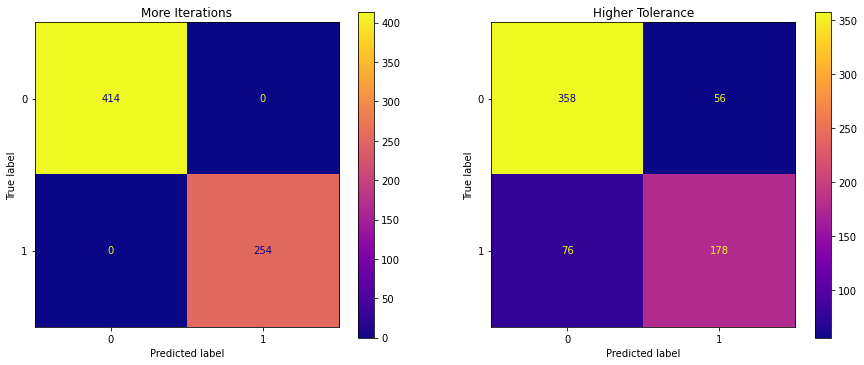
logreg_model_more_iterations_results = ModelWithCV(
logreg_model_more_iterations,
'more_iterations',
X_train,
y_train
)
logreg_model_higher_tolerance_results = ModelWithCV(
logreg_model_higher_tolerance,
'higher_tolerance',
X_train,
y_train
)
model_results = [
logreg_model_more_iterations_results,
logreg_model_higher_tolerance_results
]
f,axes = plt.subplots(ncols=2,sharey=True, figsize=(12,6))
for ax,result in zip(axes,model_results):
ax = result.plot_cv(ax)
result.print_cv_summary()
plt.tight_layout();
CV Results for `more_iterations` model:
0.78448 ± 0.02036 accuracy
CV Results for `higher_tolerance` model:
0.79941 ± 0.03885 accuracy
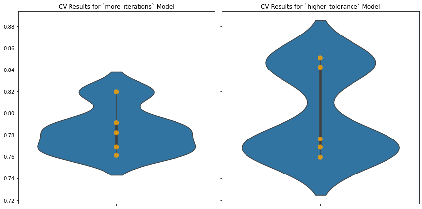
fig, ax = plt.subplots()
plot_roc_curve(logreg_model_more_iterations, X_train, y_train,
name='logreg_model_more_iterations', ax=ax)
plot_roc_curve(logreg_model_higher_tolerance, X_train, y_train,
name='logreg_model_higher_tolerance', ax=ax)
<sklearn.metrics._plot.roc_curve.RocCurveDisplay at 0x7ff57cf5ca00>
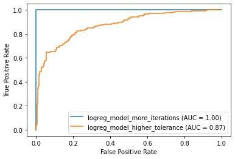
What can we observe from these two adjustments to our model with more features?
Even More Data Preparation - Scaling#
We saw that our last model is overfitting on so many features. A good strategy is to do regularization.
However, recall we should scale all of the features, so the model isn’t overly penalizing age and fare.
scaler = StandardScaler()
scaler.fit(X_train)
StandardScaler()
def scale_values(X, scaler):
"""
Given a DataFrame and a fitted scaler, use the scaler to scale all of the features
"""
scaled_array = scaler.transform(X)
scaled_df = pd.DataFrame(scaled_array, columns=X.columns, index=X.index)
return scaled_df
X_train = scale_values(X_train, scaler)
X_train.head()
| Age | SibSp | Parch | Fare | Pclass_missing | Name_missing | Sex_missing | Age_missing | SibSp_missing | Parch_missing | ... | F E69 | F G73 | F2 | F33 | F4 | G6 | T | C | Q | S | |
|---|---|---|---|---|---|---|---|---|---|---|---|---|---|---|---|---|---|---|---|---|---|
| 784 | -3.248270e-01 | -0.487594 | -0.494524 | -0.517766 | 0.0 | 0.0 | 0.0 | -0.489216 | 0.0 | 0.0 | ... | -0.03872 | -0.03872 | -0.067166 | -0.0548 | -0.03872 | -0.067166 | -0.03872 | -0.489216 | -0.29656 | 0.614263 |
| 568 | -2.719192e-16 | -0.487594 | -0.494524 | -0.514124 | 0.0 | 0.0 | 0.0 | 2.044088 | 0.0 | 0.0 | ... | -0.03872 | -0.03872 | -0.067166 | -0.0548 | -0.03872 | -0.067166 | -0.03872 | 2.044088 | -0.29656 | -1.627966 |
| 381 | -2.161750e+00 | -0.487594 | 1.998625 | -0.341142 | 0.0 | 0.0 | 0.0 | -0.489216 | 0.0 | 0.0 | ... | -0.03872 | -0.03872 | -0.067166 | -0.0548 | -0.03872 | -0.067166 | -0.03872 | 2.044088 | -0.29656 | -1.627966 |
| 694 | 2.354019e+00 | -0.487594 | -0.494524 | -0.121507 | 0.0 | 0.0 | 0.0 | -0.489216 | 0.0 | 0.0 | ... | -0.03872 | -0.03872 | -0.067166 | -0.0548 | -0.03872 | -0.067166 | -0.03872 | -0.489216 | -0.29656 | 0.614263 |
| 844 | -9.371347e-01 | -0.487594 | -0.494524 | -0.484998 | 0.0 | 0.0 | 0.0 | -0.489216 | 0.0 | 0.0 | ... | -0.03872 | -0.03872 | -0.067166 | -0.0548 | -0.03872 | -0.067166 | -0.03872 | -0.489216 | -0.29656 | 0.614263 |
5 rows × 1348 columns
4th Model - After Scaling#
Now that the data is scaled, let’s see if we can fit the model without tweaking any hyperparameters.
logreg_model = LogisticRegression(random_state=2021)
logreg_model.fit(X_train, y_train)
LogisticRegression(random_state=2021)
Model Evaluation, Part 4#
Now that we are able to run a logistic regression with default hyperparameters, let’s see how that performs.
fig, ax = plt.subplots()
fig.suptitle("Logistic Regression with All Features, Scaled")
plot_confusion_matrix(logreg_model, X_train, y_train, ax=ax, cmap="plasma");
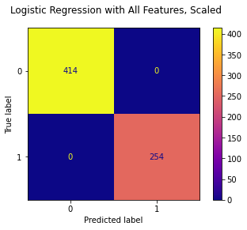
all_features_results = ModelWithCV(
logreg_model,
'all_features',
X_train,
y_train
)
# Saving variable for convenience
model_results = all_features_results
# Plot CV results
fig, ax = plt.subplots()
ax = model_results.plot_cv(ax)
plt.tight_layout();
# Print CV results
model_results.print_cv_summary()
CV Results for `all_features` model:
0.78597 ± 0.03087 accuracy
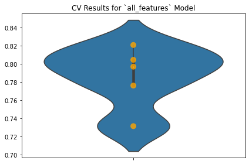
plot_roc_curve(logreg_model, X_train, y_train)
<sklearn.metrics._plot.roc_curve.RocCurveDisplay at 0x7ff57d205b50>
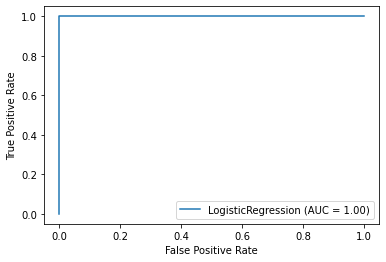
Perfect on the training data, high 70% range on the test data … this might be overfitting.
sorted(list(zip(X_train.columns, logreg_model.coef_[0])),
key=lambda x: abs(x[1]), reverse=True)[:50]
[('female', 0.7707792556639665),
('male', -0.7707792556639665),
(3, -0.3471043007334873),
('Cabin_missing', -0.29327586677786704),
('B96 B98', -0.2585325617543078),
('Allison, Master. Hudson Trevor', 0.2539182332485466),
(1, 0.2500961817164236),
('Albimona, Mr. Nassef Cassem', 0.24652579946195996),
('Dean, Master. Bertram Vere', 0.2443728765245327),
('Age', -0.24148010166980288),
('C.A. 37671', 0.23274482233402968),
('2661', 0.23244726262013704),
('Asplund, Master. Edvin Rojj Felix', 0.2311224011043906),
('Allison, Miss. Helen Loraine', -0.23052110551415986),
('Davies, Master. John Morgan Jr', 0.22936115331740045),
('Chip, Mr. Chang', 0.22860448088197205),
('Fare', 0.2262899954586828),
('Lang, Mr. Fang', 0.22494625284686867),
('29106', 0.2226534333012764),
('Allison, Mrs. Hudson J C (Bessie Waldo Daniels)', -0.21652714072965648),
('347082', -0.20986419991539199),
('Navratil, Mr. Michel ("Louis M Hoffman")', -0.20770966985748576),
('Mallet, Master. Andre', 0.20498669181842985),
('113760', 0.20336434648879606),
('Moran, Miss. Bertha', 0.2011683231498005),
('363291', 0.19779194482701032),
('2666', 0.19473980214126668),
('Fortune, Mr. Charles Alexander', -0.1891920442083936),
('Thorneycroft, Mrs. Percival (Florence Kate White)', 0.1873582859468582),
('Backstrom, Mrs. Karl Alfred (Maria Mathilda Gustafsson)',
0.18735182615280474),
('2651', 0.18315827217119457),
('Abbott, Mrs. Stanton (Rosa Hunt)', 0.1829745293648022),
('Nakid, Mr. Sahid', 0.1800819197768587),
('349909', -0.17952440203066183),
('Hakkarainen, Mrs. Pekka Pietari (Elin Matilda Dolck)', 0.17906489585506352),
('Moss, Mr. Albert Johan', 0.17895849808689),
('312991', 0.17895849808689),
('Johannesen-Bratthammer, Mr. Bernt', 0.1789314399190442),
('65306', 0.1789314399190442),
('Goldsmith, Master. Frank John William "Frankie"', 0.1788863508088326),
('2653', 0.17704805842593285),
('Nicola-Yarred, Master. Elias', 0.17630091478018423),
('Niskanen, Mr. Juha', 0.1761920472849345),
('STON/O 2. 3101289', 0.1761920472849345),
('PC 17611', 0.17524821386842124),
('Jonsson, Mr. Carl', 0.17394691920669736),
('350417', 0.17394691920669736),
('Jussila, Mr. Eiriik', 0.17394125884681988),
('STON/O 2. 3101286', 0.17394125884681988),
('Thayer, Mr. John Borland', -0.17343374868875866)]
Hyperparameter Adjustment#
Different Regularization Strengths#
Let’s try out some different regularization penalties to see if we can improve the test data score a bit.
all_features_results.print_cv_summary()
CV Results for `all_features` model:
0.78597 ± 0.03087 accuracy
model_results = [all_features_results]
C_values = [0.0001,0.001,0.01,0.1,1]
for c in C_values:
logreg_model = LogisticRegression(random_state=2021, C=c)
logreg_model.fit(X_train, y_train)
# Save Results
new_model_results = ModelWithCV(
logreg_model,
f'all_features_c{c:e}',
X_train,
y_train
)
model_results.append(new_model_results)
new_model_results.print_cv_summary()
CV Results for `all_features_c1.000000e-04` model:
0.61976 ± 0.00242 accuracy
CV Results for `all_features_c1.000000e-03` model:
0.68867 ± 0.01523 accuracy
CV Results for `all_features_c1.000000e-02` model:
0.76650 ± 0.02571 accuracy
CV Results for `all_features_c1.000000e-01` model:
0.78448 ± 0.02732 accuracy
CV Results for `all_features_c1.000000e+00` model:
0.78597 ± 0.03087 accuracy
f,axes = plt.subplots(ncols=3,nrows=2, sharey='all', figsize=(18,12))
for ax,result in zip(axes.ravel(),model_results):
ax = result.plot_cv(ax)
plt.tight_layout();
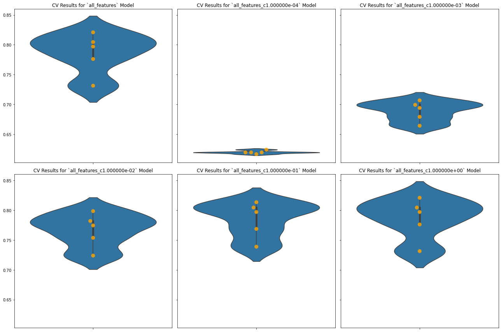
It looks like the default C value is pretty optimal for this solver.
Different Solvers#
model_results = [all_features_results]
all_features_cross_val_score = all_features_results.cv_results
Let’s try also some other solvers:
logreg_model = LogisticRegression(random_state=2021, solver="liblinear")
logreg_model.fit(X_train, y_train)
LogisticRegression(random_state=2021, solver='liblinear')
# Save for later comparison
model_results.append(
ModelWithCV(
logreg_model,
'solver:liblinear',
X_train,
y_train
)
)
# Plot both all_features vs new model
f,axes = plt.subplots(ncols=2, sharey='all', figsize=(12,6))
model_results[0].plot_cv(ax=axes[0])
model_results[-1].plot_cv(ax=axes[1])
plt.tight_layout();
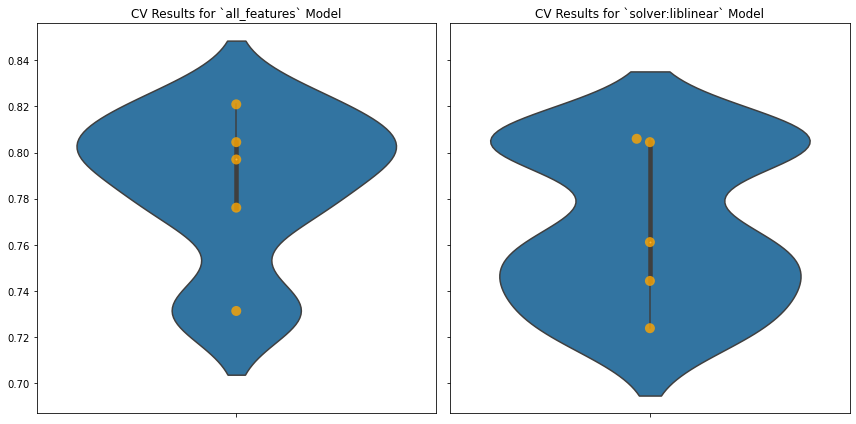
print("Old:", all_features_cross_val_score)
print("New:", model_results[-1].cv_results)
Old: [0.7761194 0.82089552 0.73134328 0.79699248 0.80451128]
New: [0.7238806 0.76119403 0.80597015 0.7443609 0.80451128]
A little slower, but no major difference in the scores. Let’s try adding some more regularization:
logreg_model = LogisticRegression(random_state=2021, solver="liblinear", C=0.01)
logreg_model.fit(X_train, y_train)
LogisticRegression(C=0.01, random_state=2021, solver='liblinear')
# Save for later comparison
model_results.append(
ModelWithCV(
logreg_model,
'solver:liblinear_C:0.01',
X_train,
y_train
)
)
# Plot both all_features vs new model
f,axes = plt.subplots(ncols=2, sharey='all', figsize=(12,6))
model_results[0].plot_cv(ax=axes[0])
model_results[-1].plot_cv(ax=axes[1])
plt.tight_layout();
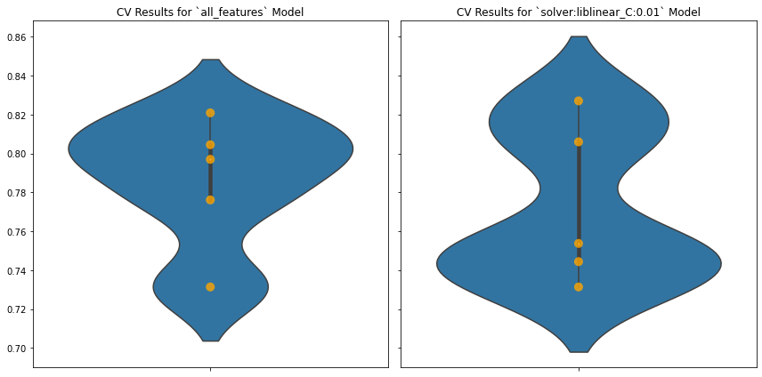
print("Old:", all_features_cross_val_score)
print("New:", model_results[-1].cv_results)
Old: [0.7761194 0.82089552 0.73134328 0.79699248 0.80451128]
New: [0.73134328 0.75373134 0.80597015 0.7443609 0.82706767]
Getting better. Try a different type of penalty:
logreg_model = LogisticRegression(random_state=2021, solver="liblinear", penalty="l1")
logreg_model.fit(X_train, y_train)
LogisticRegression(penalty='l1', random_state=2021, solver='liblinear')
# Save for later comparison
model_results.append(
ModelWithCV(
logreg_model,
'solver:liblinear_penalty:l1',
X_train,
y_train
)
)
# Plot both all_features vs new model
f,axes = plt.subplots(ncols=2, sharey='all', figsize=(12,6))
model_results[0].plot_cv(ax=axes[0])
model_results[-1].plot_cv(ax=axes[1])
plt.tight_layout();
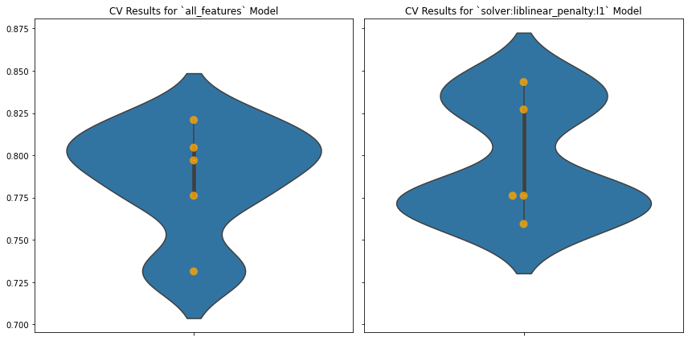
print("Old:", all_features_cross_val_score)
print("New:", model_results[-1].cv_results)
Old: [0.7761194 0.82089552 0.73134328 0.79699248 0.80451128]
New: [0.7761194 0.7761194 0.84328358 0.7593985 0.82706767]
Slightly better average here. Try adding some more regularization with L1 penalty:
logreg_model = LogisticRegression(random_state=2021, solver="liblinear", penalty="l1", C=0.01)
logreg_model.fit(X_train, y_train)
LogisticRegression(C=0.01, penalty='l1', random_state=2021, solver='liblinear')
# Save for later comparison
model_results.append(
ModelWithCV(
logreg_model,
'solver:liblinear_penalty:l1_C:0.01',
X_train,
y_train
)
)
# Plot both all_features vs new model
f,axes = plt.subplots(ncols=2, sharey='all', figsize=(12,6))
model_results[0].plot_cv(ax=axes[0])
model_results[-1].plot_cv(ax=axes[1])
plt.tight_layout();
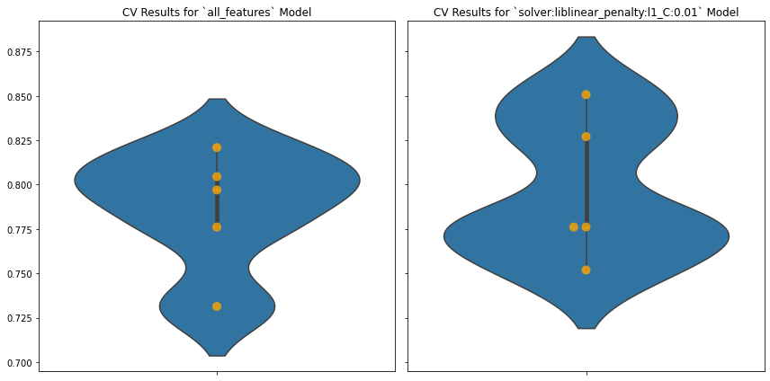
print("Old:", all_features_cross_val_score)
print("New:", model_results[-1].cv_results)
Old: [0.7761194 0.82089552 0.73134328 0.79699248 0.80451128]
New: [0.7761194 0.7761194 0.85074627 0.7518797 0.82706767]
Still, the default regularization strength seems pretty good. Double-check the confusion matrix:
logreg_model = LogisticRegression(random_state=2021, solver="liblinear", penalty="l1")
logreg_model.fit(X_train, y_train)
fig, ax = plt.subplots()
fig.suptitle("Logistic Regression with All Features (Scaled, Hyperparameters Tuned)")
plot_confusion_matrix(logreg_model, X_train, y_train, ax=ax, cmap="plasma");
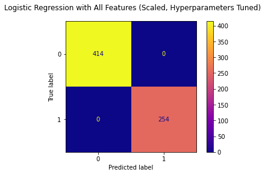
SelectFromModel#
The last model is probably overfitting. We might try thinning out the number of features by eliminating the ones with small modeling coefficients using SelectFromModel
selector = SelectFromModel(logreg_model)
selector.fit(X_train, y_train)
SelectFromModel(estimator=LogisticRegression(penalty='l1', random_state=2021,
solver='liblinear'))
We’re using the default threshold here:
thresh = selector.threshold_
thresh
1e-05
Let’s get a sense of which features will be eliminated:
coefs = selector.estimator_.coef_
coefs
array([[-0.20271981, -0.02668007, 0. , ..., 0.00044669,
0. , -0.07831913]])
coefs[coefs > thresh].shape
(148,)
selector.get_support()
array([ True, True, False, ..., True, False, True])
dict(zip(X_train.columns, selector.get_support()))
{'Age': True,
'SibSp': True,
'Parch': False,
'Fare': False,
'Pclass_missing': False,
'Name_missing': False,
'Sex_missing': False,
'Age_missing': False,
'SibSp_missing': False,
'Parch_missing': False,
'Ticket_missing': False,
'Fare_missing': False,
'Cabin_missing': True,
'Embarked_missing': False,
1: False,
2: False,
3: True,
'Abbing, Mr. Anthony': False,
'Abbott, Mr. Rossmore Edward': False,
'Abbott, Mrs. Stanton (Rosa Hunt)': False,
'Abelson, Mr. Samuel': False,
'Abelson, Mrs. Samuel (Hannah Wizosky)': False,
'Adahl, Mr. Mauritz Nils Martin': False,
'Adams, Mr. John': False,
'Albimona, Mr. Nassef Cassem': True,
'Alexander, Mr. William': False,
'Alhomaki, Mr. Ilmari Rudolf': False,
'Ali, Mr. William': False,
'Allen, Miss. Elisabeth Walton': False,
'Allen, Mr. William Henry': False,
'Allison, Master. Hudson Trevor': True,
'Allison, Miss. Helen Loraine': True,
'Allison, Mrs. Hudson J C (Bessie Waldo Daniels)': True,
'Allum, Mr. Owen George': False,
'Andersen-Jensen, Miss. Carla Christine Nielsine': False,
'Anderson, Mr. Harry': True,
'Andersson, Master. Sigvard Harald Elias': False,
'Andersson, Miss. Ebba Iris Alfrida': False,
'Andersson, Miss. Ellis Anna Maria': False,
'Andersson, Miss. Erna Alexandra': False,
'Andersson, Miss. Ingeborg Constanzia': False,
'Andersson, Miss. Sigrid Elisabeth': False,
'Andersson, Mr. Anders Johan': False,
'Andersson, Mr. August Edvard ("Wennerstrom")': True,
'Andreasson, Mr. Paul Edvin': False,
'Andrew, Mr. Edgardo Samuel': False,
'Andrews, Miss. Kornelia Theodosia': False,
'Andrews, Mr. Thomas Jr': False,
'Angle, Mrs. William A (Florence "Mary" Agnes Hughes)': False,
'Appleton, Mrs. Edward Dale (Charlotte Lamson)': False,
'Arnold-Franchi, Mr. Josef': False,
'Arnold-Franchi, Mrs. Josef (Josefine Franchi)': True,
'Asim, Mr. Adola': False,
'Asplund, Master. Clarence Gustaf Hugo': False,
'Asplund, Master. Edvin Rojj Felix': True,
'Asplund, Miss. Lillian Gertrud': False,
'Asplund, Mrs. Carl Oscar (Selma Augusta Emilia Johansson)': False,
'Attalah, Miss. Malake': True,
'Attalah, Mr. Sleiman': False,
'Aubart, Mme. Leontine Pauline': False,
'Augustsson, Mr. Albert': False,
'Ayoub, Miss. Banoura': False,
'Backstrom, Mr. Karl Alfred': False,
'Backstrom, Mrs. Karl Alfred (Maria Mathilda Gustafsson)': False,
'Baclini, Miss. Eugenie': False,
'Baclini, Miss. Helene Barbara': False,
'Baclini, Miss. Marie Catherine': False,
'Baclini, Mrs. Solomon (Latifa Qurban)': False,
'Bailey, Mr. Percy Andrew': False,
'Ball, Mrs. (Ada E Hall)': False,
'Banfield, Mr. Frederick James': False,
'Barah, Mr. Hanna Assi': True,
'Barbara, Miss. Saiide': True,
'Barber, Miss. Ellen "Nellie"': False,
'Barton, Mr. David John': False,
'Baumann, Mr. John D': False,
'Baxter, Mr. Quigg Edmond': False,
'Bazzani, Miss. Albina': False,
'Beane, Mr. Edward': True,
'Beavan, Mr. William Thomas': False,
'Becker, Miss. Marion Louise': False,
'Beckwith, Mr. Richard Leonard': True,
'Behr, Mr. Karl Howell': True,
'Bengtsson, Mr. John Viktor': False,
'Berglund, Mr. Karl Ivar Sven': False,
'Berriman, Mr. William John': False,
'Bidois, Miss. Rosalie': False,
'Birkeland, Mr. Hans Martin Monsen': False,
'Bishop, Mr. Dickinson H': True,
'Bishop, Mrs. Dickinson H (Helen Walton)': False,
'Bissette, Miss. Amelia': False,
'Bjornstrom-Steffansson, Mr. Mauritz Hakan': False,
'Blackwell, Mr. Stephen Weart': False,
'Bonnell, Miss. Elizabeth': False,
'Bostandyeff, Mr. Guentcho': False,
'Boulos, Miss. Nourelain': False,
'Boulos, Mr. Hanna': False,
'Boulos, Mrs. Joseph (Sultana)': False,
'Bourke, Mr. John': False,
'Bourke, Mrs. John (Catherine)': True,
'Bowen, Mr. David John "Dai"': False,
'Bracken, Mr. James H': False,
'Braund, Mr. Lewis Richard': False,
'Braund, Mr. Owen Harris': False,
'Brewe, Dr. Arthur Jackson': False,
'Brown, Miss. Amelia "Mildred"': False,
'Brown, Mr. Thomas William Solomon': False,
'Brown, Mrs. James Joseph (Margaret Tobin)': False,
'Brown, Mrs. Thomas William Solomon (Elizabeth Catherine Ford)': False,
'Bryhl, Mr. Kurt Arnold Gottfrid': False,
'Burke, Mr. Jeremiah': False,
'Burns, Miss. Elizabeth Margaret': False,
'Buss, Miss. Kate': False,
'Byles, Rev. Thomas Roussel Davids': False,
'Cacic, Miss. Marija': True,
'Cacic, Mr. Luka': False,
'Cairns, Mr. Alexander': False,
'Caldwell, Master. Alden Gates': True,
'Caldwell, Mrs. Albert Francis (Sylvia Mae Harbaugh)': False,
'Calic, Mr. Jovo': False,
'Calic, Mr. Petar': False,
'Cameron, Miss. Clear Annie': False,
'Campbell, Mr. William': False,
'Caram, Mrs. Joseph (Maria Elias)': True,
'Carlsson, Mr. August Sigfrid': False,
'Carlsson, Mr. Frans Olof': False,
'Carrau, Mr. Francisco M': False,
'Carter, Master. William Thornton II': True,
'Carter, Miss. Lucile Polk': False,
'Carter, Mr. William Ernest': True,
'Carter, Mrs. Ernest Courtenay (Lilian Hughes)': True,
'Carter, Mrs. William Ernest (Lucile Polk)': False,
'Carter, Rev. Ernest Courtenay': False,
'Cavendish, Mr. Tyrell William': False,
'Celotti, Mr. Francesco': False,
'Chambers, Mr. Norman Campbell': True,
'Chambers, Mrs. Norman Campbell (Bertha Griggs)': False,
'Chapman, Mr. John Henry': False,
'Charters, Mr. David': False,
'Cherry, Miss. Gladys': False,
'Chibnall, Mrs. (Edith Martha Bowerman)': False,
'Chip, Mr. Chang': True,
'Clarke, Mrs. Charles V (Ada Maria Winfield)': False,
'Cleaver, Miss. Alice': False,
'Clifford, Mr. George Quincy': False,
'Coelho, Mr. Domingos Fernandeo': False,
'Cohen, Mr. Gurshon "Gus"': True,
'Coleff, Mr. Peju': False,
'Coleff, Mr. Satio': False,
'Collander, Mr. Erik Gustaf': False,
'Colley, Mr. Edward Pomeroy': False,
'Collyer, Mr. Harvey': False,
'Collyer, Mrs. Harvey (Charlotte Annie Tate)': False,
'Connaghton, Mr. Michael': False,
'Connors, Mr. Patrick': False,
'Cor, Mr. Liudevit': False,
'Coutts, Master. Eden Leslie "Neville"': False,
'Coutts, Master. William Loch "William"': False,
'Coxon, Mr. Daniel': False,
'Crease, Mr. Ernest James': False,
'Cribb, Mr. John Hatfield': False,
'Crosby, Miss. Harriet R': False,
'Culumovic, Mr. Jeso': False,
'Cunningham, Mr. Alfred Fleming': False,
'Dakic, Mr. Branko': False,
'Daly, Mr. Eugene Patrick': True,
'Daly, Mr. Peter Denis ': True,
'Danbom, Mr. Ernst Gilbert': False,
'Danbom, Mrs. Ernst Gilbert (Anna Sigrid Maria Brogren)': True,
'Danoff, Mr. Yoto': False,
'Davidson, Mr. Thornton': False,
'Davies, Master. John Morgan Jr': True,
'Davies, Mr. Alfred J': False,
'Davison, Mrs. Thomas Henry (Mary E Finck)': False,
'Dean, Master. Bertram Vere': True,
'Dean, Mr. Bertram Frank': False,
'Denkoff, Mr. Mitto': False,
'Devaney, Miss. Margaret Delia': False,
'Dick, Mr. Albert Adrian': True,
'Dick, Mrs. Albert Adrian (Vera Gillespie)': False,
'Dimic, Mr. Jovan': False,
'Dodge, Master. Washington': True,
'Doharr, Mr. Tannous': False,
'Doling, Miss. Elsie': False,
'Doling, Mrs. John T (Ada Julia Bone)': False,
'Dorking, Mr. Edward Arthur': True,
'Douglas, Mr. Walter Donald': False,
'Downton, Mr. William James': False,
'Drew, Mrs. James Vivian (Lulu Thorne Christian)': False,
'Duane, Mr. Frank': False,
'Duff Gordon, Lady. (Lucille Christiana Sutherland) ("Mrs Morgan")': False,
'Duff Gordon, Sir. Cosmo Edmund ("Mr Morgan")': True,
'Edvardsson, Mr. Gustaf Hjalmar': False,
'Eitemiller, Mr. George Floyd': False,
'Eklund, Mr. Hans Linus': False,
'Ekstrom, Mr. Johan': False,
'Elias, Mr. Dibo': False,
'Elias, Mr. Joseph Jr': False,
'Elias, Mr. Tannous': False,
'Elsbury, Mr. William James': False,
'Emanuel, Miss. Virginia Ethel': False,
'Emir, Mr. Farred Chehab': False,
'Eustis, Miss. Elizabeth Mussey': False,
'Farthing, Mr. John': False,
'Faunthorpe, Mrs. Lizzie (Elizabeth Anne Wilkinson)': False,
'Fischer, Mr. Eberhard Thelander': False,
'Fleming, Miss. Margaret': False,
'Flynn, Mr. James': False,
'Flynn, Mr. John': False,
'Flynn, Mr. John Irwin ("Irving")': True,
'Ford, Miss. Doolina Margaret "Daisy"': False,
'Ford, Miss. Robina Maggie "Ruby"': True,
'Ford, Mr. William Neal': False,
'Foreman, Mr. Benjamin Laventall': False,
'Fortune, Miss. Alice Elizabeth': False,
'Fortune, Miss. Mabel Helen': False,
'Fortune, Mr. Charles Alexander': False,
'Fox, Mr. Stanley Hubert': False,
'Francatelli, Miss. Laura Mabel': False,
'Frauenthal, Dr. Henry William': True,
'Frauenthal, Mrs. Henry William (Clara Heinsheimer)': False,
'Frolicher, Miss. Hedwig Margaritha': False,
'Frolicher-Stehli, Mr. Maxmillian': True,
'Frost, Mr. Anthony Wood "Archie"': False,
'Fry, Mr. Richard': False,
'Funk, Miss. Annie Clemmer': True,
'Futrelle, Mr. Jacques Heath': False,
'Futrelle, Mrs. Jacques Heath (Lily May Peel)': False,
'Fynney, Mr. Joseph J': False,
'Gale, Mr. Shadrach': False,
'Gallagher, Mr. Martin': False,
'Garside, Miss. Ethel': False,
'Gaskell, Mr. Alfred': False,
'Gee, Mr. Arthur H': False,
'Gheorgheff, Mr. Stanio': False,
'Giglio, Mr. Victor': False,
'Giles, Mr. Frederick Edward': False,
'Gilinski, Mr. Eliezer': False,
'Gill, Mr. John William': False,
'Gilnagh, Miss. Katherine "Katie"': False,
'Goldenberg, Mrs. Samuel L (Edwiga Grabowska)': False,
'Goldschmidt, Mr. George B': False,
'Goldsmith, Master. Frank John William "Frankie"': True,
'Goldsmith, Mrs. Frank John (Emily Alice Brown)': False,
'Goncalves, Mr. Manuel Estanslas': False,
'Goodwin, Master. Sidney Leonard': False,
'Goodwin, Master. William Frederick': False,
'Goodwin, Miss. Lillian Amy': True,
'Goodwin, Mr. Charles Edward': False,
'Goodwin, Mrs. Frederick (Augusta Tyler)': True,
'Graham, Miss. Margaret Edith': False,
'Graham, Mrs. William Thompson (Edith Junkins)': False,
'Greenberg, Mr. Samuel': False,
'Greenfield, Mr. William Bertram': True,
'Gronnestad, Mr. Daniel Danielsen': False,
'Guggenheim, Mr. Benjamin': False,
'Gustafsson, Mr. Johan Birger': False,
'Gustafsson, Mr. Karl Gideon': False,
'Haas, Miss. Aloisia': True,
'Hagland, Mr. Ingvald Olai Olsen': False,
'Hagland, Mr. Konrad Mathias Reiersen': False,
'Hakkarainen, Mr. Pekka Pietari': False,
'Hakkarainen, Mrs. Pekka Pietari (Elin Matilda Dolck)': False,
'Hale, Mr. Reginald': False,
'Hampe, Mr. Leon': False,
'Hanna, Mr. Mansour': False,
'Hansen, Mr. Claus Peter': False,
'Harder, Mr. George Achilles': True,
'Harmer, Mr. Abraham (David Lishin)': False,
'Harper, Miss. Annie Jessie "Nina"': False,
'Harper, Mrs. Henry Sleeper (Myna Haxtun)': False,
'Harper, Rev. John': False,
'Harrington, Mr. Charles H': False,
'Harris, Mrs. Henry Birkhardt (Irene Wallach)': False,
'Harrison, Mr. William': False,
'Hart, Mr. Benjamin': False,
'Hart, Mr. Henry': False,
'Hassab, Mr. Hammad': True,
'Hassan, Mr. Houssein G N': False,
'Hawksford, Mr. Walter James': True,
'Hays, Mrs. Charles Melville (Clara Jennings Gregg)': False,
'Healy, Miss. Hanora "Nora"': False,
'Hedman, Mr. Oskar Arvid': True,
'Hegarty, Miss. Hanora "Nora"': True,
'Heikkinen, Miss. Laina': False,
'Heininen, Miss. Wendla Maria': True,
'Hendekovic, Mr. Ignjac': False,
'Henry, Miss. Delia': True,
'Herman, Miss. Alice': False,
'Herman, Mrs. Samuel (Jane Laver)': False,
'Hewlett, Mrs. (Mary D Kingcome) ': False,
'Hickman, Mr. Leonard Mark': False,
'Hickman, Mr. Lewis': False,
'Hippach, Mrs. Louis Albert (Ida Sophia Fischer)': False,
'Hirvonen, Miss. Hildur E': False,
'Hocking, Mrs. Elizabeth (Eliza Needs)': False,
'Hogeboom, Mrs. John C (Anna Andrews)': False,
'Hold, Mr. Stephen': False,
'Holm, Mr. John Fredrik Alexander': False,
'Holverson, Mr. Alexander Oskar': False,
'Holverson, Mrs. Alexander Oskar (Mary Aline Towner)': False,
'Homer, Mr. Harry ("Mr E Haven")': True,
'Hood, Mr. Ambrose Jr': False,
'Horgan, Mr. John': False,
'Hosono, Mr. Masabumi': True,
'Hoyt, Mr. William Fisher': False,
'Hoyt, Mrs. Frederick Maxfield (Jane Anne Forby)': False,
'Hunt, Mr. George Henry': False,
'Ibrahim Shawah, Mr. Yousseff': False,
'Ilett, Miss. Bertha': False,
'Ilmakangas, Miss. Pieta Sofia': True,
'Jacobsohn, Mr. Sidney Samuel': False,
'Jacobsohn, Mrs. Sidney Samuel (Amy Frances Christy)': False,
'Jalsevac, Mr. Ivan': True,
'Jardin, Mr. Jose Neto': False,
'Jarvis, Mr. John Denzil': False,
'Jenkin, Mr. Stephen Curnow': False,
'Jensen, Mr. Hans Peder': False,
'Jensen, Mr. Niels Peder': False,
'Jermyn, Miss. Annie': False,
'Jerwan, Mrs. Amin S (Marie Marthe Thuillard)': False,
'Johannesen-Bratthammer, Mr. Bernt': True,
'Johanson, Mr. Jakob Alfred': False,
'Johansson, Mr. Erik': False,
'Johansson, Mr. Karl Johan': False,
'Johnson, Miss. Eleanor Ileen': False,
'Johnson, Mr. Malkolm Joackim': False,
'Johnston, Mr. Andrew G': False,
'Jonkoff, Mr. Lalio': False,
'Jonsson, Mr. Carl': True,
'Jussila, Miss. Katriina': True,
'Jussila, Miss. Mari Aina': True,
'Jussila, Mr. Eiriik': True,
'Kallio, Mr. Nikolai Erland': False,
'Kalvik, Mr. Johannes Halvorsen': False,
'Kantor, Mrs. Sinai (Miriam Sternin)': False,
'Karaic, Mr. Milan': False,
'Karun, Miss. Manca': False,
'Kassem, Mr. Fared': False,
'Keefe, Mr. Arthur': False,
'Kelly, Miss. Anna Katherine "Annie Kate"': False,
'Kelly, Mr. James': False,
'Kelly, Mrs. Florence "Fannie"': False,
'Kent, Mr. Edward Austin': False,
'Kiernan, Mr. Philip': False,
'Kilgannon, Mr. Thomas J': False,
'Kimball, Mr. Edwin Nelson Jr': True,
'Kink, Mr. Vincenz': False,
'Kink-Heilmann, Miss. Luise Gretchen': False,
'Kirkland, Rev. Charles Leonard': False,
'Klasen, Mr. Klas Albin': False,
'Knight, Mr. Robert J': False,
'Kraeff, Mr. Theodor': False,
'Lahoud, Mr. Sarkis': False,
'Landergren, Miss. Aurora Adelia': False,
'Lang, Mr. Fang': True,
'Laroche, Miss. Simonne Marie Anne Andree': False,
'Laroche, Mrs. Joseph (Juliette Marie Louise Lafargue)': False,
'LeRoy, Miss. Bertha': False,
'Leader, Dr. Alice (Farnham)': False,
'Lefebre, Master. Henry Forbes': False,
'Lefebre, Miss. Ida': True,
'Lefebre, Miss. Mathilde': True,
'Lehmann, Miss. Bertha': False,
'Leinonen, Mr. Antti Gustaf': False,
'Leitch, Miss. Jessie Wills': False,
'Lemberopolous, Mr. Peter L': False,
'Lemore, Mrs. (Amelia Milley)': False,
'Lesurer, Mr. Gustave J': True,
'Levy, Mr. Rene Jacques': False,
'Lewy, Mr. Ervin G': False,
'Leyson, Mr. Robert William Norman': False,
'Lievens, Mr. Rene Aime': False,
'Lindahl, Miss. Agda Thorilda Viktoria': True,
'Lindblom, Miss. Augusta Charlotta': True,
'Lindell, Mr. Edvard Bengtsson': False,
'Lindqvist, Mr. Eino William': True,
'Lines, Miss. Mary Conover': False,
'Ling, Mr. Lee': False,
'Lobb, Mr. William Arthur': False,
'Long, Mr. Milton Clyde': False,
'Longley, Miss. Gretchen Fiske': False,
'Lovell, Mr. John Hall ("Henry")': False,
'Lulic, Mr. Nikola': True,
'Lundahl, Mr. Johan Svensson': False,
'Lurette, Miss. Elise': False,
'Mack, Mrs. (Mary)': True,
'Madigan, Miss. Margaret "Maggie"': False,
'Madill, Miss. Georgette Alexandra': False,
'Madsen, Mr. Fridtjof Arne': True,
'Maenpaa, Mr. Matti Alexanteri': False,
'Mallet, Master. Andre': True,
'Mallet, Mr. Albert': False,
'Mangan, Miss. Mary': True,
'Mannion, Miss. Margareth': False,
'Marechal, Mr. Pierre': True,
'Markoff, Mr. Marin': False,
'Masselmani, Mrs. Fatima': False,
'Matthews, Mr. William John': False,
'Mayne, Mlle. Berthe Antonine ("Mrs de Villiers")': False,
'McCarthy, Mr. Timothy J': False,
'McCoy, Miss. Agnes': False,
'McDermott, Miss. Brigdet Delia': False,
'McEvoy, Mr. Michael': False,
'McGowan, Miss. Anna "Annie"': False,
'McKane, Mr. Peter David': False,
'McMahon, Mr. Martin': False,
'McNamee, Mr. Neal': False,
'Meanwell, Miss. (Marion Ogden)': True,
'Meek, Mrs. Thomas (Annie Louise Rowley)': True,
'Mellinger, Miss. Madeleine Violet': False,
'Mellinger, Mrs. (Elizabeth Anne Maidment)': False,
'Mellors, Mr. William John': True,
'Meo, Mr. Alfonzo': False,
'Mernagh, Mr. Robert': False,
'Meyer, Mr. August': False,
'Meyer, Mr. Edgar Joseph': False,
'Millet, Mr. Francis Davis': False,
'Minahan, Dr. William Edward': False,
'Mineff, Mr. Ivan': False,
'Mionoff, Mr. Stoytcho': False,
'Mitchell, Mr. Henry Michael': False,
'Mitkoff, Mr. Mito': False,
'Mockler, Miss. Helen Mary "Ellie"': False,
'Moen, Mr. Sigurd Hansen': False,
'Montvila, Rev. Juozas': False,
'Moor, Master. Meier': True,
'Moor, Mrs. (Beila)': False,
'Moore, Mr. Leonard Charles': False,
'Moran, Miss. Bertha': False,
'Moran, Mr. Daniel J': False,
'Moran, Mr. James': False,
'Moraweck, Dr. Ernest': False,
'Morley, Mr. Henry Samuel ("Mr Henry Marshall")': False,
'Morley, Mr. William': False,
'Moss, Mr. Albert Johan': True,
'Moubarek, Master. Gerios': False,
'Moubarek, Master. Halim Gonios ("William George")': False,
'Moutal, Mr. Rahamin Haim': False,
'Mudd, Mr. Thomas Charles': False,
'Mullens, Miss. Katherine "Katie"': False,
'Murdlin, Mr. Joseph': False,
'Murphy, Miss. Katherine "Kate"': False,
'Murphy, Miss. Margaret Jane': False,
'Myhrman, Mr. Pehr Fabian Oliver Malkolm': False,
'Najib, Miss. Adele Kiamie "Jane"': False,
'Nakid, Miss. Maria ("Mary")': False,
'Nakid, Mr. Sahid': True,
'Nankoff, Mr. Minko': False,
'Nasser, Mr. Nicholas': False,
'Natsch, Mr. Charles H': False,
'Navratil, Master. Edmond Roger': True,
'Navratil, Master. Michel M': True,
'Navratil, Mr. Michel ("Louis M Hoffman")': False,
'Nenkoff, Mr. Christo': False,
'Newell, Miss. Marjorie': False,
'Newell, Mr. Arthur Webster': False,
'Newsom, Miss. Helen Monypeny': False,
'Nicholls, Mr. Joseph Charles': False,
'Nicholson, Mr. Arthur Ernest': False,
'Nicola-Yarred, Master. Elias': True,
'Nicola-Yarred, Miss. Jamila': False,
'Nilsson, Miss. Helmina Josefina': False,
'Nirva, Mr. Iisakki Antino Aijo': False,
'Niskanen, Mr. Juha': True,
'Nosworthy, Mr. Richard Cater': False,
'Novel, Mr. Mansouer': False,
'Nysveen, Mr. Johan Hansen': False,
"O'Brien, Mr. Thomas": False,
"O'Brien, Mr. Timothy": False,
"O'Connell, Mr. Patrick D": False,
"O'Connor, Mr. Maurice": False,
"O'Driscoll, Miss. Bridget": False,
'O\'Leary, Miss. Hanora "Norah"': False,
"O'Sullivan, Miss. Bridget Mary": True,
'Ohman, Miss. Velin': False,
'Olsen, Mr. Karl Siegwart Andreas': False,
'Olsen, Mr. Ole Martin': False,
'Olsson, Miss. Elina': True,
'Olsson, Mr. Nils Johan Goransson': False,
'Oreskovic, Miss. Marija': True,
'Oreskovic, Mr. Luka': False,
'Osen, Mr. Olaf Elon': False,
'Ostby, Mr. Engelhart Cornelius': False,
'Pain, Dr. Alfred': False,
'Palsson, Master. Gosta Leonard': False,
'Palsson, Miss. Stina Viola': False,
'Palsson, Miss. Torborg Danira': False,
'Palsson, Mrs. Nils (Alma Cornelia Berglund)': False,
'Panula, Master. Eino Viljami': False,
'Panula, Master. Juha Niilo': False,
'Panula, Master. Urho Abraham': False,
'Panula, Mr. Ernesti Arvid': False,
'Panula, Mr. Jaako Arnold': False,
'Panula, Mrs. Juha (Maria Emilia Ojala)': True,
'Parkes, Mr. Francis "Frank"': False,
'Parrish, Mrs. (Lutie Davis)': False,
'Partner, Mr. Austen': False,
'Pasic, Mr. Jakob': False,
'Patchett, Mr. George': False,
'Pavlovic, Mr. Stefo': False,
'Pears, Mrs. Thomas (Edith Wearne)': False,
'Peduzzi, Mr. Joseph': False,
'Pekoniemi, Mr. Edvard': False,
'Penasco y Castellana, Mr. Victor de Satode': True,
'Penasco y Castellana, Mrs. Victor de Satode (Maria Josefa Perez de Soto y Vallejo)': False,
'Pengelly, Mr. Frederick William': False,
'Pernot, Mr. Rene': False,
'Peter, Miss. Anna': False,
'Peter, Mrs. Catherine (Catherine Rizk)': False,
'Peters, Miss. Katie': True,
'Petranec, Miss. Matilda': True,
'Petroff, Mr. Nedelio': False,
'Petterson, Mr. Johan Emil': False,
'Pettersson, Miss. Ellen Natalia': True,
'Phillips, Miss. Kate Florence ("Mrs Kate Louise Phillips Marshall")': False,
'Pickard, Mr. Berk (Berk Trembisky)': True,
'Pinsky, Mrs. (Rosa)': False,
'Ponesell, Mr. Martin': False,
'Porter, Mr. Walter Chamberlain': False,
'Radeff, Mr. Alexander': False,
'Reed, Mr. James George': False,
'Reeves, Mr. David': False,
'Rekic, Mr. Tido': False,
'Renouf, Mr. Peter Henry': False,
'Renouf, Mrs. Peter Henry (Lillian Jefferys)': False,
'Reuchlin, Jonkheer. John George': False,
'Rice, Master. Arthur': False,
'Rice, Master. Eric': False,
'Richard, Mr. Emile': False,
'Richards, Master. George Sibley': False,
'Richards, Master. William Rowe': False,
'Richards, Mrs. Sidney (Emily Hocking)': False,
'Ridsdale, Miss. Lucy': False,
'Rintamaki, Mr. Matti': False,
'Robbins, Mr. Victor': False,
'Robert, Mrs. Edward Scott (Elisabeth Walton McMillan)': False,
'Roebling, Mr. Washington Augustus II': False,
'Rommetvedt, Mr. Knud Paust': False,
'Rood, Mr. Hugh Roscoe': False,
'Rosblom, Mr. Viktor Richard': False,
'Rosblom, Mrs. Viktor (Helena Wilhelmina)': True,
'Ross, Mr. John Hugo': False,
'Rothes, the Countess. of (Lucy Noel Martha Dyer-Edwards)': False,
'Rothschild, Mrs. Martin (Elizabeth L. Barrett)': False,
'Rugg, Miss. Emily': False,
'Rush, Mr. Alfred George John': False,
'Ryan, Mr. Patrick': False,
'Ryerson, Miss. Emily Borie': False,
'Ryerson, Miss. Susan Parker "Suzette"': False,
'Saad, Mr. Amin': False,
'Saad, Mr. Khalil': False,
'Saalfeld, Mr. Adolphe': True,
'Sadlier, Mr. Matthew': False,
'Sage, Miss. Constance Gladys': False,
'Sage, Miss. Dorothy Edith "Dolly"': False,
'Sage, Miss. Stella Anna': False,
'Sage, Mr. Douglas Bullen': False,
'Sage, Mr. George John Jr': False,
'Sagesser, Mlle. Emma': False,
'Salonen, Mr. Johan Werner': False,
'Sandstrom, Miss. Marguerite Rut': False,
'Sandstrom, Mrs. Hjalmar (Agnes Charlotta Bengtsson)': False,
'Saundercock, Mr. William Henry': False,
'Sawyer, Mr. Frederick Charles': False,
'Scanlan, Mr. James': False,
'Sdycoff, Mr. Todor': False,
'Sedgwick, Mr. Charles Frederick Waddington': False,
'Seward, Mr. Frederic Kimber': True,
'Sharp, Mr. Percival James R': False,
'Sheerlinck, Mr. Jan Baptist': True,
'Shellard, Mr. Frederick William': False,
'Shelley, Mrs. William (Imanita Parrish Hall)': False,
'Shutes, Miss. Elizabeth W': False,
'Silven, Miss. Lyyli Karoliina': False,
'Silverthorne, Mr. Spencer Victor': True,
'Silvey, Mr. William Baird': False,
'Simonius-Blumer, Col. Oberst Alfons': True,
'Sinkkonen, Miss. Anna': False,
'Sirota, Mr. Maurice': False,
'Sivic, Mr. Husein': False,
'Sivola, Mr. Antti Wilhelm': False,
'Skoog, Master. Harald': False,
'Skoog, Miss. Mabel': True,
'Skoog, Miss. Margit Elizabeth': True,
'Skoog, Mr. Wilhelm': False,
'Slabenoff, Mr. Petco': False,
'Slayter, Miss. Hilda Mary': False,
'Slemen, Mr. Richard James': False,
'Slocovski, Mr. Selman Francis': False,
'Sloper, Mr. William Thompson': True,
'Smiljanic, Mr. Mile': False,
'Smith, Miss. Marion Elsie': False,
'Somerton, Mr. Francis William': False,
'Spedden, Mrs. Frederic Oakley (Margaretta Corning Stone)': False,
'Spencer, Mrs. William Augustus (Marie Eugenie)': False,
'Stahelin-Maeglin, Dr. Max': True,
'Stankovic, Mr. Ivan': False,
'Stanley, Miss. Amy Zillah Elsie': False,
'Stead, Mr. William Thomas': False,
'Stephenson, Mrs. Walter Bertram (Martha Eustis)': False,
'Stewart, Mr. Albert A': False,
'Stone, Mrs. George Nelson (Martha Evelyn)': False,
'Strandberg, Miss. Ida Sofia': True,
'Strom, Mrs. Wilhelm (Elna Matilda Persson)': True,
'Sutehall, Mr. Henry Jr': False,
'Svensson, Mr. Johan': False,
'Svensson, Mr. Olof': False,
'Swift, Mrs. Frederick Joel (Margaret Welles Barron)': False,
'Taussig, Miss. Ruth': False,
'Taussig, Mr. Emil': False,
'Taussig, Mrs. Emil (Tillie Mandelbaum)': False,
'Taylor, Mr. Elmer Zebley': True,
'Taylor, Mrs. Elmer Zebley (Juliet Cummins Wright)': False,
'Thayer, Mr. John Borland': False,
'Thayer, Mr. John Borland Jr': True,
'Thayer, Mrs. John Borland (Marian Longstreth Morris)': False,
'Theobald, Mr. Thomas Leonard': False,
'Thomas, Master. Assad Alexander': True,
'Thorneycroft, Mr. Percival': False,
'Thorneycroft, Mrs. Percival (Florence Kate White)': False,
'Tikkanen, Mr. Juho': False,
'Todoroff, Mr. Lalio': False,
'Tomlin, Mr. Ernest Portage': False,
'Toomey, Miss. Ellen': False,
'Torber, Mr. Ernst William': False,
'Tornquist, Mr. William Henry': True,
'Toufik, Mr. Nakli': False,
'Touma, Mrs. Darwis (Hanne Youssef Razi)': False,
'Troupiansky, Mr. Moses Aaron': False,
'Troutt, Miss. Edwina Celia "Winnie"': False,
'Turcin, Mr. Stjepan': False,
'Turja, Miss. Anna Sofia': False,
'Turkula, Mrs. (Hedwig)': True,
'Turpin, Mr. William John Robert': False,
'Uruchurtu, Don. Manuel E': False,
'Van Impe, Mr. Jean Baptiste': False,
'Van der hoef, Mr. Wyckoff': False,
'Vande Velde, Mr. Johannes Joseph': False,
'Vanden Steen, Mr. Leo Peter': False,
'Vander Cruyssen, Mr. Victor': False,
'Vander Planke, Miss. Augusta Maria': True,
'Vander Planke, Mrs. Julius (Emelia Maria Vandemoortele)': True,
'Vestrom, Miss. Hulda Amanda Adolfina': True,
'Vovk, Mr. Janko': False,
'Waelens, Mr. Achille': False,
'Walker, Mr. William Anderson': False,
'Ward, Miss. Anna': False,
'Warren, Mrs. Frank Manley (Anna Sophia Atkinson)': False,
'Watson, Mr. Ennis Hastings': False,
'Watt, Mrs. James (Elizabeth "Bessie" Inglis Milne)': False,
'Webber, Miss. Susan': False,
'Webber, Mr. James': False,
'Weir, Col. John': False,
'Wells, Miss. Joan': False,
'West, Mr. Edwy Arthur': False,
'West, Mrs. Edwy Arthur (Ada Mary Worth)': False,
'Wheadon, Mr. Edward H': False,
'White, Mr. Percival Wayland': False,
'White, Mr. Richard Frasar': False,
'Wick, Miss. Mary Natalie': False,
'Widegren, Mr. Carl/Charles Peter': False,
'Widener, Mr. Harry Elkins': False,
'Wiklund, Mr. Jakob Alfred': False,
'Wilhelms, Mr. Charles': True,
'Williams, Mr. Charles Duane': False,
'Williams, Mr. Charles Eugene': True,
'Williams, Mr. Howard Hugh "Harry"': False,
'Williams, Mr. Leslie': False,
'Williams-Lambert, Mr. Fletcher Fellows': False,
'Windelov, Mr. Einar': False,
'Wiseman, Mr. Phillippe': False,
'Woolner, Mr. Hugh': False,
'Wright, Mr. George': False,
'Yasbeck, Mrs. Antoni (Selini Alexander)': False,
'Young, Miss. Marie Grice': False,
'Youseff, Mr. Gerious': False,
'Yousif, Mr. Wazli': False,
'Yrois, Miss. Henriette ("Mrs Harbeck")': True,
'Zabour, Miss. Thamine': True,
'Zimmerman, Mr. Leo': False,
'de Messemaeker, Mrs. Guillaume Joseph (Emma)': False,
'del Carlo, Mr. Sebastiano': False,
'van Billiard, Mr. Austin Blyler': False,
'van Melkebeke, Mr. Philemon': False,
'female': True,
'male': True,
'110152': False,
'110413': False,
'110465': False,
'110564': False,
'110813': False,
'111240': False,
'111320': False,
'111361': False,
'111369': True,
'111426': True,
'112050': False,
'112053': False,
'112058': False,
'112059': False,
'112379': False,
'113043': False,
'113051': False,
'113055': True,
'113059': False,
'113501': False,
'113503': False,
'113505': False,
'113509': False,
'113510': False,
'113514': False,
'113572': False,
'113760': True,
'113767': False,
'113776': False,
'113781': False,
'113783': False,
'113784': False,
'113788': True,
'113789': False,
'113794': True,
'113796': False,
'113798': False,
'113800': False,
'113803': False,
'113806': False,
'113807': False,
'11668': False,
'11751': True,
'11752': False,
'11753': True,
'11755': False,
'11765': True,
'11769': False,
'11771': False,
'11774': True,
'11813': False,
'11967': False,
'12749': False,
'13049': False,
'13213': True,
'13214': True,
'13502': False,
'13507': False,
'13509': False,
'13567': True,
'13568': False,
'14311': False,
'14313': False,
'14973': False,
'1601': True,
'16966': False,
'16988': True,
'17421': False,
'17453': False,
'17463': False,
'17465': False,
'17466': False,
'17474': False,
'19877': False,
'19928': False,
'19943': False,
'19947': False,
'19950': False,
'19952': True,
'19972': False,
'19988': True,
'19996': False,
'2003': False,
'211536': False,
'219533': False,
'220367': False,
'220845': False,
'2223': False,
'223596': False,
'226875': False,
'229236': False,
'230080': False,
'230136': False,
'230433': False,
'231919': False,
'231945': False,
'233639': False,
'233866': False,
'234604': False,
'234818': False,
'236853': False,
'237565': False,
'237671': True,
'237736': False,
'237798': True,
'239853': False,
'239854': False,
'239855': False,
'239856': False,
'239865': False,
'24160': False,
'243847': False,
'243880': False,
'244252': False,
'244270': True,
'244278': False,
'244310': False,
'244358': False,
'244361': False,
'244367': False,
'244373': True,
'248706': False,
'248723': False,
'248727': False,
'248733': False,
'248738': False,
'248740': False,
'248747': True,
'250644': False,
'250647': False,
'250648': False,
'250652': False,
'250653': False,
'250655': False,
'2624': False,
'2625': True,
'2627': True,
'2628': False,
'2631': False,
'2641': False,
'2647': False,
'2649': False,
'2650': False,
'2651': True,
'2653': True,
'2659': False,
'2661': True,
'2663': True,
'2664': False,
'2665': True,
'2666': True,
'2667': False,
'2668': False,
'26707': False,
'2671': False,
'2672': False,
'2674': False,
'2678': True,
'2683': False,
'2685': False,
'2686': False,
'2687': False,
'2689': True,
'2690': False,
'2691': True,
'2693': False,
'2694': False,
'2695': False,
'2697': False,
'2699': False,
'2700': False,
'27267': False,
'27849': False,
'28134': False,
'28206': False,
'28220': False,
'28228': False,
'28403': False,
'28425': False,
'28551': False,
'28664': False,
'28665': False,
'29011': False,
'2908': True,
'29103': False,
'29105': False,
'29106': True,
'29108': False,
'2926': False,
'29750': False,
'29751': False,
'3101264': False,
'3101267': False,
'3101277': False,
'3101278': False,
'3101281': False,
'3101295': False,
'3101296': False,
'3101298': False,
'31027': False,
'312991': True,
'312992': False,
'312993': False,
'31418': False,
'315037': False,
'315082': False,
'315084': True,
'315086': False,
'315088': False,
'315089': False,
'315090': False,
'315093': False,
'315094': False,
'315096': True,
'315097': False,
'315098': True,
'315151': False,
'315153': False,
'323592': False,
'323951': False,
'324669': False,
'330877': False,
'330909': True,
'330919': False,
'330923': False,
'330932': False,
'330935': True,
'330958': False,
'330979': False,
'330980': False,
'334912': False,
'335097': False,
'33638': True,
'336439': False,
'341826': False,
'34218': False,
'342826': False,
'343095': True,
'343275': False,
'345364': False,
'345572': False,
'345763': True,
'345764': True,
'345765': False,
'345767': False,
'345769': False,
'345773': False,
'345777': False,
'345779': True,
'345780': False,
'345781': False,
'345783': False,
'3460': False,
'347054': True,
'347060': False,
'347061': False,
'347062': False,
'347063': False,
'347064': False,
'347068': False,
'347069': False,
'347071': True,
'347073': True,
'347074': False,
'347076': False,
'347077': True,
'347078': False,
'347080': False,
'347082': True,
'347085': False,
'347087': True,
'347088': True,
'347089': True,
'3474': False,
'347464': False,
'347466': False,
'347468': False,
'347470': False,
'347742': False,
'347743': False,
'348123': False,
'349204': False,
'349207': False,
'349209': False,
'349210': False,
'349212': False,
'349213': False,
'349214': False,
'349216': False,
'349218': False,
'349219': False,
'349221': False,
'349222': False,
'349223': False,
'349224': False,
'349225': False,
'349228': False,
'349231': False,
'349233': False,
'349234': False,
'349236': True,
'349237': False,
'349239': False,
'349240': True,
'349242': False,
'349243': False,
'349245': True,
'349246': False,
'349247': False,
'349249': False,
'349251': False,
'349252': False,
'349253': False,
...}
def select_important_features(X, selector):
"""
Given a DataFrame and a selector, use the selector to choose
the most important columns
"""
imps = dict(zip(X.columns, selector.get_support()))
selected_array = selector.transform(X)
selected_df = pd.DataFrame(selected_array,
columns=[col for col in X.columns if imps[col]],
index=X.index)
return selected_df
X_train_selected = select_important_features(X=X_train, selector=selector)
logreg_sel = LogisticRegression(random_state=2021, solver="liblinear", penalty="l2")
logreg_sel.fit(X_train_selected, y_train)
LogisticRegression(random_state=2021, solver='liblinear')
# Save for later comparison
select_results = ModelWithCV(
logreg_sel,
'logreg_sel',
X_train_selected,
y_train
)
# Plot both all_features vs new model
f,axes = plt.subplots(ncols=2, sharey='all', figsize=(12,6))
model_results[0].plot_cv(ax=axes[0])
select_results.plot_cv(ax=axes[1])
plt.tight_layout();
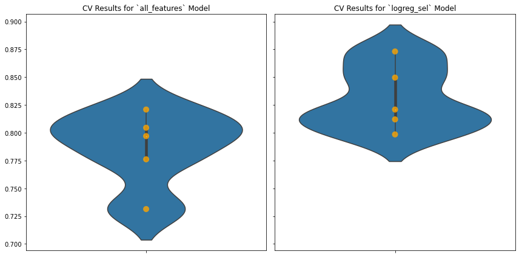
print("Old:", all_features_cross_val_score)
print("New:", select_results.cv_results)
Old: [0.7761194 0.82089552 0.73134328 0.79699248 0.80451128]
New: [0.79850746 0.82089552 0.87313433 0.81203008 0.84962406]
Probably still overfitting, but let’s call this our final model!
Final Model Evaluation#
Now that we have a final model, run X_test through all of the preprocessing steps so we can evaluate the model’s performance
X_test_no_transformations = X_test.copy()
# add missing indicators
X_test_mi = add_missing_indicator_columns(X_test_no_transformations, indicator)
# separate out values for imputation
X_test_numeric = X_test_mi[numeric_feature_names]
X_test_categorical = X_test_mi[categorical_feature_names]
# impute missing values
X_test_numeric = impute_missing_values(X_test_numeric, numeric_imputer)
X_test_categorical = impute_missing_values(X_test_categorical, categorical_imputer)
X_test_imputed = pd.concat([X_test_numeric, X_test_categorical], axis=1)
X_test_new = X_test_mi.drop(numeric_feature_names + categorical_feature_names, axis=1)
X_test_final = pd.concat([X_test_imputed, X_test_new], axis=1)
# one-hot encode categorical data
for categorical_feature in categorical_feature_names:
X_test_final = encode_and_concat_feature(X_test_final,
categorical_feature, encoders[categorical_feature])
# scale values
X_test_scaled = scale_values(X_test_final, scaler)
# select features
X_test_selected = select_important_features(X_test_scaled, selector)
X_test_selected.head()
| Age | SibSp | Cabin_missing | 3 | Albimona, Mr. Nassef Cassem | Allison, Master. Hudson Trevor | Allison, Miss. Helen Loraine | Allison, Mrs. Hudson J C (Bessie Waldo Daniels) | Anderson, Mr. Harry | Andersson, Mr. August Edvard ("Wennerstrom") | ... | D49 | E10 | E12 | E17 | E24 | E25 | E50 | E77 | C | S | |
|---|---|---|---|---|---|---|---|---|---|---|---|---|---|---|---|---|---|---|---|---|---|
| 210 | -0.401365 | -0.487594 | 0.551985 | 0.905629 | -0.03872 | -0.03872 | -0.03872 | -0.03872 | -0.03872 | -0.03872 | ... | -0.03872 | -0.03872 | -0.03872 | -0.03872 | -0.03872 | -0.03872 | -0.03872 | -0.03872 | -0.489216 | 0.614263 |
| 876 | -0.707519 | -0.487594 | 0.551985 | 0.905629 | -0.03872 | -0.03872 | -0.03872 | -0.03872 | -0.03872 | -0.03872 | ... | -0.03872 | -0.03872 | -0.03872 | -0.03872 | -0.03872 | -0.03872 | -0.03872 | -0.03872 | -0.489216 | 0.614263 |
| 666 | -0.324827 | -0.487594 | 0.551985 | -1.104205 | -0.03872 | -0.03872 | -0.03872 | -0.03872 | -0.03872 | -0.03872 | ... | -0.03872 | -0.03872 | -0.03872 | -0.03872 | -0.03872 | -0.03872 | -0.03872 | -0.03872 | -0.489216 | 0.614263 |
| 819 | -1.472904 | 2.182185 | 0.551985 | 0.905629 | -0.03872 | -0.03872 | -0.03872 | -0.03872 | -0.03872 | -0.03872 | ... | -0.03872 | -0.03872 | -0.03872 | -0.03872 | -0.03872 | -0.03872 | -0.03872 | -0.03872 | -0.489216 | 0.614263 |
| 736 | 1.435558 | 0.402332 | 0.551985 | 0.905629 | -0.03872 | -0.03872 | -0.03872 | -0.03872 | -0.03872 | -0.03872 | ... | -0.03872 | -0.03872 | -0.03872 | -0.03872 | -0.03872 | -0.03872 | -0.03872 | -0.03872 | -0.489216 | 0.614263 |
5 rows × 243 columns
Create a model with the relevant hyperparameters, fit, and score
final_model = LogisticRegression(random_state=2021, solver="liblinear", penalty="l1")
final_model.fit(X_train_selected, y_train)
final_model.score(X_test_selected, y_test)
0.7802690582959642
Compare the past models#
# Create a way to categorize our different models
model_candidates = [
{
'name':'dummy_model'
,'model':dummy_model
,'X_test':X_test
,'y_test':y_test
},
{
'name':'simple_logreg_model'
,'model':simple_logreg_model
,'X_test':X_test_no_transformations[["SibSp", "Parch", "Fare"]]
,'y_test':y_test
},
{
'name':'logreg_model_more_iterations'
,'model':logreg_model_more_iterations
,'X_test':X_test_final
,'y_test':y_test
},
{
'name':'logreg_model_higher_tolerance'
,'model':logreg_model_higher_tolerance
,'X_test':X_test_final
,'y_test':y_test
},
{
'name':'final_model'
,'model':final_model
,'X_test':X_test_selected
,'y_test':y_test
}
]
final_scores_dict = {
"Model Name": [candidate.get('name') for candidate in model_candidates],
"Mean Accuracy": [
candidate.get('model').score(
candidate.get('X_test'),
candidate.get('y_test')
)
for candidate in model_candidates
]
}
final_scores_df = pd.DataFrame(final_scores_dict).set_index('Model Name')
final_scores_df
| Mean Accuracy | |
|---|---|
| Model Name | |
| dummy_model | 0.605381 |
| simple_logreg_model | 0.650224 |
| logreg_model_more_iterations | 0.798206 |
| logreg_model_higher_tolerance | 0.757848 |
| final_model | 0.780269 |
Final comparison of confusion matrices
nrows = 2
ncols = math.ceil(len(model_candidates)/nrows)
fig, axes = plt.subplots(
nrows=nrows,
ncols=ncols,
figsize=(12, 6)
)
fig.suptitle("Confusion Matrix Comparison")
# Turn off all the axes (in case nothing to plot); turn on while iterating over
[ax.axis('off') for ax in axes.ravel()]
for i,candidate in enumerate(model_candidates):
# Logic for making rows and columns for matrices
row = i // 3
col = i % 3
ax = axes[row][col]
ax.set_title(candidate.get('name'))
ax.set_axis_on()
cm_display = plot_confusion_matrix(
candidate.get('model'),
candidate.get('X_test'),
candidate.get('y_test'),
normalize='true',
cmap='plasma',
ax=ax,
)
cm_display.im_.set_clim(0, 1)
plt.tight_layout()
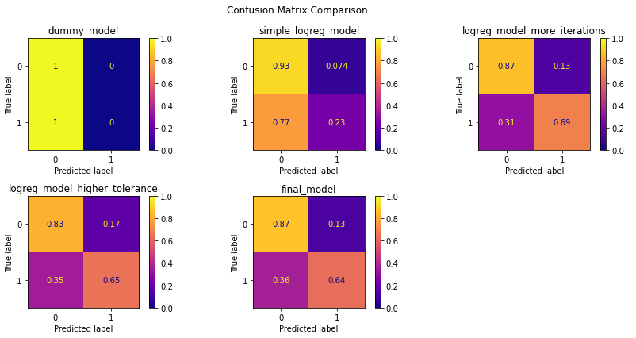
fig, ax = plt.subplots()
# Plot only the last models we created (so it's not too cluttered)
for model_candidate in model_candidates[3:]:
plot_roc_curve(
model_candidate.get('model'),
model_candidate.get('X_test'),
model_candidate.get('y_test'),
name=model_candidate.get('name'),
ax=ax
)
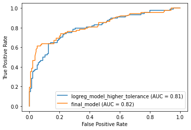
fig, ax = plt.subplots()
# Plot the final model against the other earlier models
plot_roc_curve(
final_model,
X_test_selected,
y_test,
name='final_model',
ax=ax
)
for model_candidate in model_candidates[:3]:
plot_roc_curve(
model_candidate.get('model'),
model_candidate.get('X_test'),
model_candidate.get('y_test'),
name=model_candidate.get('name'),
ax=ax
)
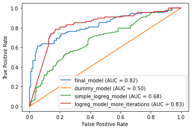
Exercise#
Build and iterate on a logistic regression model of color for the diamonds dataset! Maximize accuracy.
diamonds = sns.load_dataset('diamonds')